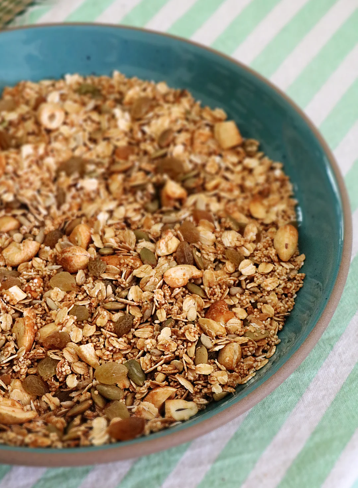

Homemade Muesli

Back to homepage
Description
I've been making home made muesli for well over 10 years and have refined the recipe to be exactly the way I like it. Extra nutty, coconutty and a little bit sweet, but most importantly deliciously crispy!
Ingredients
Sauce
- 1/4 cup of honey
- 1/4 cup of coconut oil (with the fragrance if you like coconut flavours)
- 1-2 tbsp of cinnamon
- 1 tsp of vanilla (you could also use a vanilla stick instead)
Nuts & oats
- 2-4kg of whole oats (you can choose different types and the amounts depends on the ratio you prefer, adding more oats is a bit more budget friendly)
- 100g pistachio
- 100g hazelnut
- 100g almond
- 100g macadamia
- 100g pecan
- 100g walnuts
- 300g coconut flakes
- 100g pumpkin seeds
- 100g sunflower seeds
To serve
- 1 tsp chia seed
- 1 tsp broken flax seeds
- 1 tsp hemp seeds
- 1 tsp poppy seeds
- 100g pecan
- 100g walnuts
Steps
- Turn the oven on at 180 degrees celcius and line an oven tray with backing paper.
- Chop the pistachios, hazelnuts, almonds, macadamia, pecans and walnuts. I'm so anal that I like to slice my nuts piece by piece to reduce waste, as random chopping will generate a lot of crumbs, and to get nice even sized bits for the oven. I'm pretty sure no-one is as obsessive as I am but it's an option.
- Heat up a small pan on low to medium-low heat with all the sauce ingredients and stir until it is combined and smooth. The sauce should not be bubbling. In general the quantities I've written down are estimates, it's all quite specific to your taste, do you want it sweeter, less sweet, less crunchy/sticky or more crunchy/sticky?
- Mix nuts and oats together, you might need multiple bowls for this due to the large quantity or you can be smart and make a smaller batch. I like to be picky and distribute my nuts and oats evenly so I'll actually weigh the nuts and muesli to make sure the ratio is the same in all my bowls. Again, it's very excessive, probably unnecessary but I like being picky so why not? Definitely not a requirement.
- Pour the sauce over the mix of nuts and oats, try to do it one batch at a time as the sauce will solidify/thicken/harden once it leaves the pan. I usually pour a bit of it over one of my bowls, put the pan back on the lowest heat to keep the sauce smooth, thoroughly stir the bowl and then move on to the next one. I keep pouring the sauce until it's evenly distributed and covers all the muesli and nuts well.
- Scoop a heaping of muesli onto the oven tray so that there is about a 2cm layer covering the surface.
- Place in the oven for 5 minutes, stir and put back in the oven for 5 minutes. Usually I leave it in the over for a total of 10 minutes when it starts to turn slightly golden brown, but you might need 15 for extra crunch. Don't leave it in the oven for too long as it tends to burn quickly. It will harden and crisp once it cools.
- Remove the tray from the oven and spread across a large plate to cool in a single layer. Repeat for each batch on a separate tray. It is really important to let it cool before storage, otherwise it will clump and become a bit soggy. I usually store it in glass jars with rubber seals because it looks cool and stays fresh for a long time.
Back to homepage